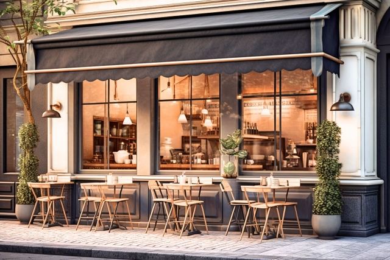
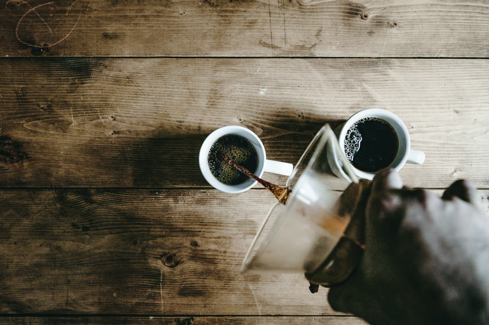
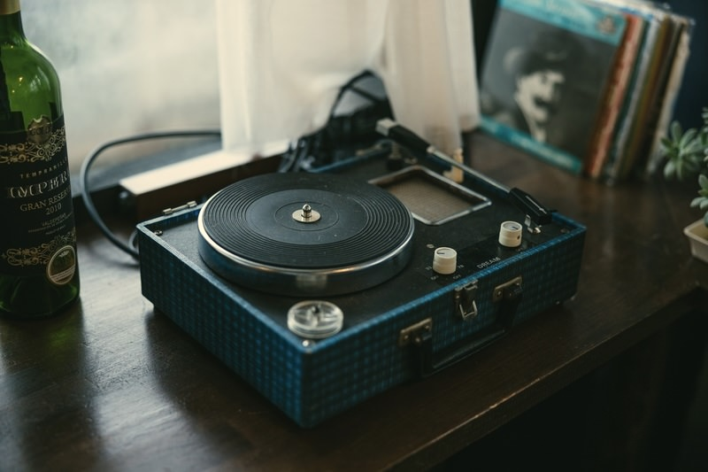
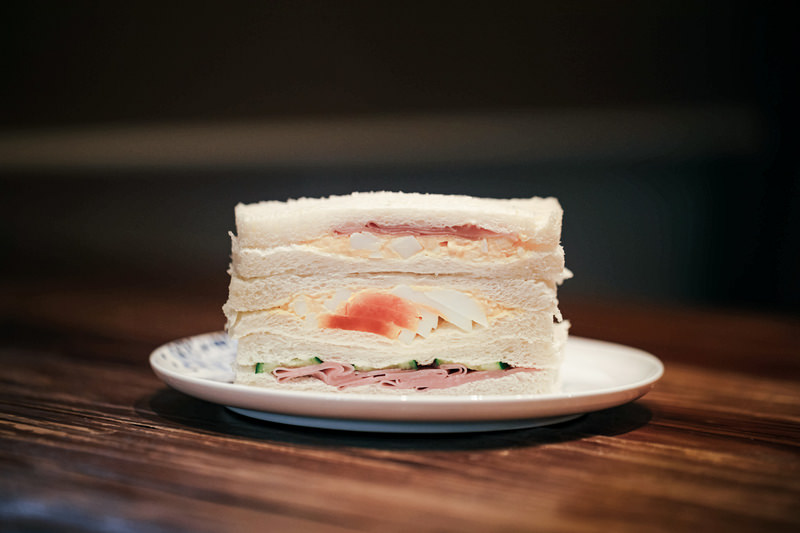
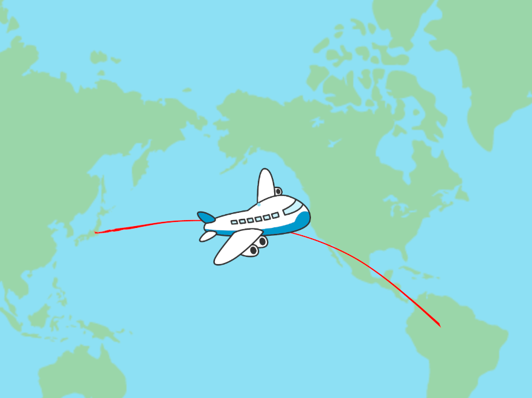

お店の"こだわり"

このカフェは、穏やかな街角に佇む隠れ家のような場所です。外観 はレトロな石畳の小道に面しており、その風情ある外観から入ると、アットホームで温かな雰囲気が広がっています。
カウンターには、バリスタが丹精込めて淹れた美しいラテアートを施したカフェラテやエスプレッソが並んでいます。 新鮮な焼き立てのパンや、季節のフルーツで作られたケーキなど、多彩なお菓子も陳列されており、どれも美味しそうな香りが漂っています。


店内の音楽は、心地よいジャズやアコースティックのメロディで満ちており、ゆったりとした時間を楽しむのに最適です。 お客様は、静かに読書を楽しんだり友達との楽しい会話を楽しんだりしています。
このカフェは、新鮮な食材と丁寧な調理にこだわり、おしゃれで美味しい料理を提供しています。季節ごとにメニューが変わり、新たな味覚体験が楽しめます。 地元の農産物を使用したサラダやサンドイッチ、シェフ特製のスープなど、健康的で美味しい選択肢が豊富です。
営業期間
- 恐らく2025年 7月7日〜7月27日
- 恐らく2025年 12月1日〜12月28日
時間
恐らく10:00~20:00ぐらい
木曜日は恐らく臨時休業
※季節・天候により時間変更・休業する場合がございます。
アクセス
